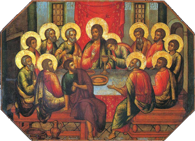

HODIE / Domenica della VI settimana di Pasqua.
ANTIFONA / Con voce di gioia date l’annuncio, fatelo giungere ai confini della terra: il Signore ha riscattato il suo popolo. Alleluia. (Is 48,20).
CONFITEOR / Confesso a Dio onnipotente e a voi, fratelli e sorelle, che ho molto peccato in pensieri, parole, opere e omissioni, per mia colpa, mia colpa, mia grandissima colpa. E supplico la beata sempre vergine Maria, gli angeli, i santi e voi, fratelli e sorelle, di pregare per me il Signore Dio nostro. Dio onnipotente abbia misericordia di noi, perdoni i nostri peccati e ci conduca alla vita eterna. Signore Pietà, Cristo pietà.
GLORIA / Gloria a Dio nell'alto dei cieli e pace in terra agli uomini di buona volontà. Noi ti lodiamo, ti benediciamo, ti adoriamo, ti glorifichiamo, ti rendiamo grazie per la tua gloria immensa, Signore Dio, Re del cielo, Dio Padre onnipotente. Signore, figlio unigenito, Gesù Cristo, Signore Dio, Agnello di Dio, Figlio del Padre, tu che togli i peccati dal mondo abbi pietà di noi; tu che togli i peccati dal mondo, accogli la nostra supplica; tu che siedi alla destra del Padre, abbi pietà di noi. Perché tu solo il Santo, tu solo il Signore, tu solo l'Altissimo, Gesù Cristo, con lo Spirito Santo: nella gloria di Dio Padre. Amen.
COLLETTA / Dio onnipotente, fa’ che viviamo con intenso amore questi giorni di letizia in onore del Signore risorto, per testimoniare nelle opere il mistero che celebriamo nella fede. Per il nostro Signore Gesù Cristo, tuo Figlio, che è Dio, e vive e regna con te, nell'unità dello Spirito Santo, per tutti i secoli dei secoli. ♦ O Padre, che nel tuo Figlio ci hai chiamati amici, rinnova i prodigi del tuo Spirito, perché, amando come Gesù ci ha amati, gustiamo la pienezza della gioia. Per il nostro Signore Gesù Cristo, tuo Figlio, che è Dio, e vive e regna con te, nell'unità dello Spirito Santo, per tutti i secoli dei secoli.
LETTURA1 / Anche sui pagani si è effuso il dono dello Spirito Santo / Dagli Atti degli Apostoli (At 10,25-26.34-35.44-48) / Avvenne che, mentre Pietro stava per entrare [nella casa di Cornelio], questi gli andò incontro e si gettò ai suoi piedi per rendergli omaggio. Ma Pietro lo rialzò, dicendo: «Àlzati: anche io sono un uomo!». Poi prese la parola e disse: «In verità sto rendendomi conto che Dio non fa preferenze di persone, ma accoglie chi lo teme e pratica la giustizia, a qualunque nazione appartenga». Pietro stava ancora dicendo queste cose, quando lo Spirito Santo discese sopra tutti coloro che ascoltavano la Parola. E i fedeli circoncisi, che erano venuti con Pietro, si stupirono che anche sui pagani si fosse effuso il dono dello Spirito Santo; li sentivano infatti parlare in altre lingue e glorificare Dio. Allora Pietro disse: «Chi può impedire che siano battezzati nell'acqua questi che hanno ricevuto, come noi, lo Spirito Santo?». E ordinò che fossero battezzati nel nome di Gesù Cristo. Quindi lo pregarono di fermarsi alcuni giorni. / Parola di Dio.
PSALMUS / (Sal 97) Il Signore ha rivelato ai popoli la sua giustizia /Alleluia, alleluia, alleluia. Cantate al Signore un canto nuovo, perché ha compiuto meraviglie. Gli ha dato vittoria la sua destra e il suo braccio santo. R. / Il Signore ha fatto conoscere la sua salvezza, agli occhi delle genti ha rivelato la sua giustizia. Egli si è ricordato del suo amore, della sua fedeltà alla casa d'Israele. R. / Tutti i confini della terra hanno veduto la vittoria del nostro Dio. Acclami il Signore tutta la terra, gridate, esultate, cantate inni! R.
LETTURA2 / Dio è amore / Dalla prima lettera di san Giovanni apostolo (1Gv 4,7-10) / Carissimi, amiamoci gli uni gli altri, perché l'amore è da Dio: chiunque ama è stato generato da Dio e conosce Dio. Chi non ama non ha conosciuto Dio, perché Dio è amore. In questo si è manifestato l'amore di Dio in noi: Dio ha mandato nel mondo il suo Figlio unigenito, perché noi avessimo la vita per mezzo di lui. In questo sta l'amore: non siamo stati noi ad amare Dio, ma è lui che ha amato noi e ha mandato il suo Figlio come vittima di espiazione per i nostri peccati. / Parola di Dio
ALLELUIA / Alleluia, alleluia / Se uno mi ama, osserverà la mia parola, dice il Signore, e il Padre mio lo amerà e noi verremo a lui. (Gv 14,23) / Alleluia.
VANGELO / Nessuno ha un amore più grande di questo: dare la sua vita per i propri amici / Dal Vangelo secondo Giovanni (Gv 15,9-17) / In quel tempo, Gesù disse ai suoi discepoli: «Come il Padre ha amato me, anche io ho amato voi. Rimanete nel mio amore. Se osserverete i miei comandamenti, rimarrete nel mio amore, come io ho osservato i comandamenti del Padre mio e rimango nel suo amore. Vi ho detto queste cose perché la mia gioia sia in voi e la vostra gioia sia piena. Questo è il mio comandamento: che vi amiate gli uni gli altri come io ho amato voi. Nessuno ha un amore più grande di questo: dare la sua vita per i propri amici. Voi siete miei amici, se fate ciò che io vi comando. Non vi chiamo più servi, perché il servo non sa quello che fa il suo padrone; ma vi ho chiamato amici, perché tutto ciò che ho udito dal Padre mio l'ho fatto conoscere a voi. Non voi avete scelto me, ma io ho scelto voi e vi ho costituiti perché andiate e portiate frutto e il vostro frutto rimanga; perché tutto quello che chiederete al Padre nel mio nome, ve lo conceda. Questo vi comando: che vi amiate gli uni gli altri». / Parola del Signore
CREDO / Credo in un solo Dio, Padre onnipotente, creatore del cielo e della terra, di tutte le cose visibili e invisibili. Credo in un solo Signore, Gesù Cristo, unigenito Figlio di Dio, nato dal Padre prima di tutti i secoli: Dio da Dio, Luce da Luce, Dio vero da Dio vero, generato, non creato, della stessa sostanza del Padre; per mezzo di lui tutte le cose sono state create. Per noi uomini e per la nostra salvezza discese dal cielo, e per opera dello Spirito Santo si è incarnato nel seno della Vergine Maria e si è fatto uomo. Fu crocifisso per noi sotto Ponzio Pilato, morì e fu sepolto. Il terzo giorno è risuscitato, secondo le Scritture, è salito al cielo, siede alla destra del Padre. E di nuovo verrà, nella gloria, per giudicare i vivi e i morti, e il suo regno non avrà fine. Credo nello Spirito Santo, che è Signore e dà la vita, e procede dal Padre e dal Figlio. Con il Padre e il Figlio è adorato e glorificato, e ha parlato per mezzo dei profeti. Credo la Chiesa, una santa cattolica e apostolica. Professo un solo battesimo per il perdono dei peccati. Aspetto la risurrezione dei morti e la vita del mondo che verrà. Amen.
OREMUS / La gloria di Dio, che risplende nella morte e risurrezione di Gesù, ci viene donata attraverso lo Spirito Santo, che ci permette di vivere nella fede, nella speranza e nella carità. Preghiamo insieme e diciamo: Donaci, Signore, il tuo Spirito d'amore. / Agnello di Dio, rendi la tua Chiesa risplendente di gloria, per essere segno già in questo mondo dell'amore pieno che tu ci doni, preghiamo. / Principe della pace, spegni l'odio nel mondo, poni fine ai conflitti, riconcilia le famiglie divise, concedi a tutti il dono della pace pasquale, preghiamo. / Figlio del Padre, unisci le nostre comunità cristiane, perché nella diversità dei carismi si manifesti l'unico dono dello Spirito Santo, preghiamo. / Signore risorto, fa' che tutti noi che partecipiamo a questa Eucaristia passiamo dalle tenebre del peccato alla splendida luce della tua risurrezione, preghiamo. / Signore, che risorgendo da morte ci hai resi partecipi dei tuoi doni pasquali, fa' che, fedeli ai tuoi comandamenti, ti serviamo sempre con cuore puro e riconoscente. Tu che vivi e regni nei secoli dei secoli.
OFFERTORIO / Salgano a te, o Signore, le nostre preghiere insieme all’offerta di questo sacrificio, perché, purificati dal tuo amore, possiamo accostarci al sacramento della tua grande misericordia. Per Cristo nostro Signore.
PREFAZIO / (PA-II) La nuova vita in Cristo / E’ veramente cosa buona e giusta, nostro dovere e fonte di salvezza, proclamare sempre la tua gloria, o Signore, e soprattutto esaltarti in questo tempo nel quale Cristo, nostra Pasqua, si è immolato. Per mezzo di lui rinascono a vita nuova i figli della luce, e si aprono ai credenti le porte del regno dei cieli. In lui morto è redenta la nostra morte, in lui risorto tutta la vita risorge. Per questo mistero, nella pienezza della gioia pasquale, l’umanità esulta su tutta la terra, e con l’assemblea degli angeli e dei santi canta l’inno della tua gloria: Santo, Santo, Santo il Signore Dio dell’universo. I cieli e la terra sono pieni della tua gloria. Osanna nell’alto dei cieli. Benedetto colui che viene nel nome del Signore. Osanna nell’alto dei cieli.
COMMUNIO / Chi rimane in me, e io in lui, porta molto frutto: senza di me non potete far nulla. Alleluia. (Gv 15,5)
GRATIAS / Dio onnipotente, che nella risurrezione di Cristo ci fai nuove creature per la vita eterna, accresci in noi i frutti del sacramento pasquale e infondi nei nostri cuori la forza di questo nutrimento di salvezza. Per Cristo nostro Signore. / Benedizione solenne / Dio, che nella risurrezione del suo Figlio unigenito ci ha donato la grazia della redenzione e ha fatto di noi i suoi figli, vi dia la gioia della sua benedizione. R. Amen. Il Redentore, che ci ha donato la libertà senza fine, vi renda partecipi dell’eredità eterna. R. Amen. E voi, che per la fede in Cristo siete risorti nel Battesimo, possiate crescere in santità di vita per incontrarlo un giorno nella patria del cielo. R. Amen. E la benedizione di Dio onnipotente, Padre e Figlio e Spirito Santo, discenda su di voi e con voi rimanga sempre. R. Amen.
LECTIO
EVANGELIZO-21 / Venerabile Madeleine Delbrêl (1904-1964) missionaria laica delle periferie urbane / Viva la libertà / La carità del cristiano Tu sei cristiano per mezzo e per la carità; per mezzo di nient'altro e per nient'altro. (...) La carità è più che il necessario per esistere, più che il necessario per vivere, più che il necessario per agire; La carità è la nostra vita che diviene vita eterna. Quando tralasciamo la carità, noi tralasciamo la vita. Un atto senza carità è una morte subita, un atto della carità è una risurrezione immediata. Non puoi fabbricare la carità: la ricevi. La carità imperfetta è un dono ricevuto non completamente; la carità perfetta è un dono completamente ricevuto. La carità è gratuita tanto quanto è necessaria. Non la vinci come un concorso. La conquisti desiderandola, chiedendola, ricevendola e trasmettendola. Non si impara la carità, si fa la sua conoscenza poco a poco, conoscendo Cristo. E' la fede di Cristo che ci rende capaci di carità; è la vita di Cristo che ci rivela la carità; è la vita di Cristo che ci mostra come desiderare, chiedere, ricevere la carità. E' lo spirito di Cristo che ci fa vivere di carità, agire con la carità, ci rende fecondi di carità. Tutto può servire alla carità, senza di lei tutto è sterile e prima di tutto noi stessi.
DiBruno-21 / Perché andiate e portiate frutto e il vostro frutto rimanga (Gv 15,9-17) / Qual è il frutto che i discepoli dovranno portare? Ecco cosa ci rivela l’Apostolo Paolo nella Lettera ai Romani: “Paolo, servo di Cristo Gesù, apostolo per chiamata, scelto per annunciare il vangelo di Dio – che egli aveva promesso per mezzo dei suoi profeti nelle sacre Scritture e che riguarda il Figlio suo, nato dal seme di Davide secondo la carne, costituito Figlio di Dio con potenza, secondo lo Spirito di santità, in virtù della risurrezione dei morti, Gesù Cristo nostro Signore; per mezzo di lui abbiamo ricevuto la grazia di essere apostoli, per suscitare l’obbedienza della fede in tutte le genti, a gloria del suo nome, e tra queste siete anche voi, chiamati da Gesù Cristo –, a tutti quelli che sono a Roma, amati da Dio e santi pe r chiamata, grazia a voi e pace da Dio, Padre nostro, e dal Signore Gesù Cristo! Anzitutto rendo grazie al mio Dio per mezzo di Gesù Cristo riguardo a tutti voi, perché della vostra fede si parla nel mondo intero. Mi è testimone Dio, al quale rendo culto nel mio spirito annunciando il vangelo del Figlio suo, come io continuamente faccia memoria di voi, chiedendo sempre nelle mie preghiere che, in qualche modo, un giorno, per volontà di Dio, io abbia l’opportunità di venire da voi. Desidero infatti ardentemente vedervi per comunicarvi qualche dono spirituale, perché ne siate fortificati, o meglio, per essere in mezzo a voi confortato mediante la fede che abbiamo in comune, voi e io. Non voglio che ignoriate, fratelli, che più volte mi sono proposto di venire fino a voi – ma finora ne sono stato impedito – per raccogliere qualche frutto anche tra voi, come tra le altre nazioni. Sono in debito verso i Greci come verso i barbari, verso i sapienti come verso gli ignoranti: sono quindi pronto, per quanto sta in me, ad annunciare il Vangelo anche a voi che siete a Roma” (Rm 1,1-15). “A colui che ha il potere di confermarvi nel mio Vangelo, che annuncia Gesù Cristo, secondo la rivelazione del mistero, avvolto nel silenzio per secoli eterni, ma ora manifestato mediante le scritture dei Profeti, per ordine dell’eterno Dio, annunciato a tutte le genti perché giungano all’obbedienza della fede, a Dio, che solo è sapiente, per mezzo di Gesù Cristo, la gloria nei secoli. Amen” (Rm 16,25-27). Il frutto che gli Apostoli dovranno portare consiste nel fare discepoli di Cristo Gesù tutte le genti per la predicazione, l’annunzio, l’insegnamento, la testimonianza del Vangelo che avviene per mezzo del loro ministero. Se l’Apostolo non porta all’obbedienza alla fede le genti, lui non produce frutti e se non produce frutti attesta che non vive legato a Cristo Signore così come il tralcio è legato alla vera vita. È un tralcio separato dalla vite. Vite e tralcio sempre devono essere una cosa sola. La vita produce per mezzo dei tralci. I tralci attingono la loro forza vitale dalla vite. Nella separazione non ci sono frutti. / In quel tempo, Gesù disse ai suoi discepoli: «Come il Padre ha amato me, anche io ho amato voi. Rimanete nel mio amore. Se osserverete i miei comandamenti, rimarrete nel mio amore, come io ho osservato i comandamenti del Padre mio e rimango nel suo amore. Vi ho detto queste cose perché la mia gioia sia in voi e la vostra gioia sia piena. Questo è il mio comandamento: che vi amiate gli uni gli altri come io ho amato voi. Nessuno ha un amore più grande di questo: dare la sua vita per i propri amici. Voi siete miei amici, se fate ciò che io vi comando. Non vi chiamo più servi, perché il servo non sa quello che fa il suo padrone; ma vi ho chiamato amici, perché tutto ciò che ho udito dal Padre mio l’ho fatto conoscere a voi. Non voi avete scelto me, ma io ho scelto voi e vi ho costituiti perché andiate e portiate frutto e il vostro frutto rimanga; perché tutto quello che chiederete al Padre nel mio nome, ve lo conceda. Questo vi comando: che vi amiate gli uni gli altri». / È verità. La vite senza i suoi tralci non produce alcun frutto. Ma neanche i tralci senza la vite produrranno frutti. Vite e tralci sono una cosa sola. Così è per Cristo e per gli Apostoli. Ma anche per gli Apostoli e ogni altro discepolo di Gesù Signore. Come Cristo e gli Apostoli sono una sola cosa. Così anche gli Apostoli e ogni altro discepolo di Gesù devono essere una cosa sola. Il legame non deve essere però artificiale, ma vitale. Come il tralcio spunta dalla vite così gli Apostoli devono spuntare da Cristo. Così anche ogni altro discepolo deve spuntare dagli Apostoli. È verità immodificabile. / Madre della Redenzione, Angeli, Santi, fateci una sola vite in Cristo e negli Apostoli.
Silvestrini-21 / L'amore più grande: dare la vita per i propri amici. Nei capitoli del vangelo di San Giovanni che la liturgia ci propone nelle domeniche del tempo pasquale, troviamo esortazioni, insegnamenti, profezie per il futuro, preghiere al Padre di intensità e spessore "non umano". Anche oggi incontriamo Gesù, nel Cenacolo, la notte prima del tradimento che si intrattiene con i suoi apostoli. È il momento migliore per condividere con loro il suo testamento spirituale. Chiede ai suoi apostoli l'amore. E' il comandamento ultimo e più importante. Rassicura con il dono dello Spirito Santo, che può rafforzare un percorso di fede, che è provato da difficoltà di ogni tipo. Affida la vita dei suoi apostoli, dei credenti e di tutto il mondo nelle mani del Padre. Tutto questo ruota attorno a ciò che si sta per compiere: la sua Passione e Resurrezione. Gesù sa che sta per affrontare il momento più difficile e non solo per la sua vicenda umana. Sarà una prova terribile anche per i suoi discepoli. Sarà lo spartiacque che porterà non solo alla fede vera ma proprio a comprendere tutti quegli insegnamenti che sembravano così oscuri. Il Mistero Pasquale è al centro di tutta l'esperienza degli apostoli. Gesù vuole far comprendere che quello che succederà sarà la conseguenza dell'odio e dell'egoismo umano ma ha una radice ben più profonda. È il piano di amore di Dio che si realizza. Comprendere questo significa comprendere un mistero infinito. È il messaggio fondamento del lieto annuncio. Il Regno di Dio è un regno di amore che si realizza con la donazione di Cristo sulla Croce e si fa presente con la sua Resurrezione. La vita nei sacramenti è la nostra partecipazione al mistero pasquale. Chiediamo a Gesù che ciò si realizzi come atto di amore nella donazione più gratuita e sincera.
LOYOLA-21 / Siamo abituati a fare classifiche! Solo qualcuno è il top nella vita, altri stanno dietro. Noi vorremmo essere i primi, ma ci sentiamo ultimi. E se fossimo tutti uguali? Come sono sempre gli amici, che vivono tra pari? Uguali nelle differenze: non uno migliore degli altri, ma ognuno portatore di vita per gli altri, a suo modo. Questo non riguarda solo noi: in realtà questo legame di parità lo si avverte a partire dal Gesù. Ci consegna lo stesso amore che ha ricevuto dal Padre: infinito. L’amore di un Padre è infinito per il Figlio, l’amore del Figlio è infinito per i suoi amici! Allora non serve altro che essere sé stessi: non serve apparire e voler mostrare altro di quello che siamo… serve solo accettarci, amarci per quello che siamo, cioè guardarci con lo stesso sguardo di Gesù che ci guarda e ci chiama: amici! Con questa consapevolezza potremmo dirigerci liberi verso l’altro: raccontargli che c’è qualcosa di grande che ci unisce! Che c’è un amore allo stesso tempo tanto intimo e tanto spazioso, che vorrebbe entrare in tutti ed allargare il cuore di tutti. Questo amore parla di te, per te, con te, in te! / Quali classifiche, e secondo quali criteri, ti capita di fare nella vita? In cosa fai difficoltà ad accettare di essere pari agli altri, cioè amico? Cosa ti impedisce di sentirti pronto/a ad accogliere l’amore di Gesù come l’amore infinito del Padre? (Loris Piorar SJ)
FEGF1 / «Perché piangi?» di San Gregorio Magno nel sesto secolo / Maria, mentre piangeva, si chinò e guardò nel sepolcro. Eppure aveva già visto che era vuoto, e aveva annunciato la scomparsa del Signore. Perché allora si china ancora? Perché ancora desidera vedere? Perché l’amore non si accontenta di un solo sguardo; l’amore è una ricerca sempre più ardente. L’ha già cercato, ma invano; si ostina e finisce col ritrovarlo... Nel Cantico dei cantici, la Chiesa diceva dello Sposo: “Sul mio letto, lungo la notte, ho cercato l’amato del mio cuore; l’ho cercato, ma non l’ho trovato. Mi alzerò e farò il giro della città; per le strade e per le piazze; voglio cercare l’amato del mio cuore” (Ct 3,12). Due volte esprime la sua delusione: “L’ho cercato, ma non l’ho trovato”. Infine il successo corona i suoi sforzi: “Mi hanno incontrato le guardie che fanno la ronda: Avete visto l’amato del mio cuore. Da poco le avevo oltrepassate, quando trovai l’amato del mio cuore” (Ct 3,3-4). Quanto a noi, quando, sul nostro letto, cerchiamo l’Amato? Durante i brevi riposi di questa vita, quando sospiriamo in assenza del nostro Redentore. Di notte lo cerchiamo, perché anche se il nostro spirito veglia già su di lui, i nostri occhi non vedono null’altro che la sua ombra. Ma poiché non troviamo l’Amato, alziamoci, facciamo il giro della città, cioè della santa assemblea degli eletti. Cerchiamolo con tutto il nostro cuore; guardiamo per le strade e per le piazze, cioè nei passaggi ripidi della vita o nelle sue vie spaziose; apriamo gli occhi, cerchiamo i passi dell’Amato del nostro cuore... Questo desiderio faceva dire a Davide: “L’anima mia ha sete di Dio, del Dio vivente: quando verrò e vedrò il volto di Dio? Senza sosta, cercate il suo volto” (Sal 42,3).
FEGF2 / Come il Padre ha amato me, anch’io ho amato voi, di Sant’Agostino nel quinto secolo / Il Signore Gesù afferma di voler dare ai suoi discepoli un comandamento nuovo, quello di amarsi a vicenda... Ma questo comandamento non era già contenuto nell'antica legge di Dio, che dice: “Amerai il prossimo tuo come te stesso” (Lv 19, 18)? Perché allora il Signore chiama nuovo un comandamento che risulta così antico? O lo chiama nuovo perché, spogliandoci dell'uomo vecchio, esso ci riveste del nuovo (Ef 2,24)? Non un amore qualsiasi, infatti, rinnova l'uomo, ma l'amore che il Signore distingue da quello puramente umano aggiungendo: “Come io ho amato voi”... Cristo dunque ci ha dato un comandamento nuovo: di amarci gli uni gli altri, come egli ci ha amati. E' questo amore che ci rinnova, rendendoci uomini nuovi, eredi del Testamento Nuovo, cantori del “cantico nuovo” (Sal 95,1). Questo amore, fratelli carissimi, ha rinnovato anche i giusti dei tempi antichi, i patriarchi e i profeti, come poi i beati Apostoli. E' questo amore che anche adesso rinnova le genti e raccoglie tutto il genere umano, sparso ovunque sulla terra, per farne un sol popolo nuovo, il corpo della novella sposa dell'unigenito Figlio di Dio.
Rosalba Manes / Amici / In una società come la nostra, dove la parola «amore» è fortemente abusata e deformata, abbiamo bisogno di comprendere che «l’amore è da Dio: chiunque ama è stato generato da Dio e conosce Dio» (1Gv 4,7). Abbiamo bisogno di tornare alle sorgenti dell’amore per riossigenarlo e capirne le movenze, focalizzando la verità da cui esso si origina: «In questo sta l’amore: non siamo stati noi ad amare Dio, ma è lui che ha amato noi e ha mandato il suo Figlio come vittima di espiazione per i nostri peccati» (1Gv 4,9). Per iniziarci all’arte dell’amore, Gesù, che è l’amore del Padre fatto carne, dischiude il tesoro delle relazioni trinitarie e ci permette di gettare lo sguardo nell’intensità del suo rapporto con il Padre. Egli inoltre ci rivela la sua volontà di instaurare con noi una relazione che abbia la qualità dell’amore mutuo che intercorre tra lui e il Padre. Se il Figlio ci permette di entrare nell’atmosfera familiare divina, non è per farci sperimentare una breve sosta o un breve passaggio, ma perché possiamo piantarvi le nostre tende e rimanere: «Come il Padre ha amato me, anche io ho amato voi. Rimanete nel mio amore» (Gv 15,9). Il verbo «rimanere», impiegato già a proposito del rapporto tra i tralci e la vite (cf. Gv 15,1-8), dice durata, continuità, resistenza e fedeltà. Questo «rimanere nell’amore» cui i discepoli di tutti i tempi sono chiamati è conseguenza di un tipo di amore che spinge a conformarsi a colui che si ama e da cui ci si sente amati, a essere docili alla sua parola, a ospitare il suo stesso sentire. Gesù invita i suoi a dare ospitalità alle sue parole per sintonizzarsi con le frequenze del suo cuore, proprio come fa lui nei confronti del Padre. Questa conformazione è sollecitata e incoraggiata da Gesù in vista di un frutto importante: «Vi ho detto queste cose perché la mia gioia sia in voi e la vostra gioia sia piena» (Gv 15,11). La comunione con il Maestro procura una gioia che non è una semplice emozione o un sentimento passeggero, ma una condizione durevole, permanente, che immette in un senso di pienezza che viene dal vivere ciò che porta a compimento ogni esistenza, l’amore: «Questo è il mio comandamento: che vi amiate gli uni gli altri come io ho amato voi. Nessuno ha un amore più grande di questo: dare la sua vita per i propri amici» (Gv 15,12-13). In queste parole è racchiuso il sogno del Maestro per noi: che ci amiamo a vicenda, assorbendo la qualità dell’amore con cui egli ci ama e irrorando con essa le nostre mutue relazioni. Questo «amore più grande» non consiste nel dare delle cose ma tutto se stesso, la propria stessa vita, agli altri che vengono risuscitati da questo amore ed elevati alla dignità di «amici». Cristo proclama così la sacralità dell’amicizia e il suo carattere “pasquale” facendoci comprendere che essa è la più fedele e autentica testimonianza di coloro che sono salvati. La nostra amicizia può manifestare la stessa amicizia di Cristo capace di elevare gli altri, anche i più lontani, e di accoglierli, come accade a Pietro nella sua visita a casa del centurione Cornelio, quando con sommo stupore si percepisce strumento dell’opera amorevole di un Dio che va oltre i confini geografici e oltre ogni tipo di appartenenza: «In verità sto rendendomi conto che Dio non fa preferenza di persone, ma accoglie chi lo teme e pratica la giustizia, a qualunque nazione appartenga» (At 10,34-35). Il primo annuncio della Vangelo che possiamo rivolgere agli altri è la nostra attitudine solare e amicale che rende gli altri ben disposti ad ascoltare quella parola di salvezza che libera l’effusione dello Spirito Santo su ogni carne.
MichaelDavide Semeraro / Il tuo nome è Accoglienza, alleluia! / Pietro sembra doversi arrendere all’evidenza della grazia e piegarsi alla logica del dono: «In verità sto rendendomi conto che Dio non fa preferenze di persone, ma accoglie chi lo teme e pratica la giustizia, a qualunque nazione appartenga» (At 10,34). Un cammino che ha richiesto molto impegno e una profonda conversione per l’apostolo Pietro e, in realtà, è un processo ancora in atto nella vita della Chiesa, perché non ci saremo mai resi conto abbastanza di quanto e di come «Dio non fa preferenze di persone, ma accoglie». Rendersi conto di un Dio che accoglie sempre e comunque, significa imparare - ogni giorno - ad andare oltre i segni delle appartenenze chiare, distinte, accomodanti e accomodate, per aprirsi a qualcosa che ci trascende continuamente, fino a obbligarci ad arrenderci all’amore: «Chi può impedire che siano battezzati nell’acqua questi che hanno ricevuto, come noi, lo Spirito Santo» (At 10,47)? È un interrogativo che si presenta, in modi diversi, nelle varie epoche della vita della Chiesa, non esclusa la nostra. Non sempre il Signore osserva le nostre regole e si sottomette ai nostri percorsi formativi e iniziatici e, talora, invece di aspettare il permesso di potersi rivelare, si dà in dono ben oltre i segni e i confini da noi definiti e imposti alla grazia. La parola del salmo ci permette di esprimere al meglio i sentimenti più adatti all’esperienza di tanta grazia: «Cantate al Signore un canto nuovo, perché ha compiuto meraviglie» (Sal 97,1). La meditazione contemplativa dell’apostolo Giovanni non lascia scampo a interpretazioni riduttive di un amore che, per natura, sembra essere eccedente e straripante: «In questo sta l’amore: non siamo stati noi ad amare Dio, ma è lui che ha amato noi e ha mandato il suo Figlio» (1Gv 4,10). La parola del Signore Gesù ci rivela il fondamento assoluto di ogni nostra esperienza di verità e di carità, che radica nella stessa relazione intradivina: «Come il Padre ha amato me, anche io ho amato voi. Rimanete nel mio amore» (Gv 15,9). Il verbo amare e il termine amore, ricorrono nove volte nei nove versetti del Vangelo e, nella seconda lettura, ancora nove volte in quattro versetti. Così ci è dato di capire a che cosa si riferisca l’apostolo Pietro quando esplicita il criterio di appartenenza alla comunità dei credenti, facendo riferimento alla «giustizia». La storia comincia sempre non con l’amare, ma con il sentirsi amati tanto da imparare e amare di amare! Agostino annotava nelle sue Confessioni una delle note caratteristiche della sua giovinezza in questi termini: «Amare et amari amabam». Tradotto significa: «amavo amare ed essere amato». Penso che questa sia sta anche una delle caratteristiche più sensibili della personalità del Signore Gesù, portate però all’apice del sentire e del realizzare: amare di amare per essere amato. La meditazione del tempo pasquale sul mistero del dono sponsale di Cristo Signore, morto e risorto per noi, diventa per ogni discepolo una sorta di lento, ma efficace ritorno alle radici del proprio cuore, per accogliervi il fuoco dello Spirito che conforma a Cristo.
Roberto Pasolini / Gioia piena / Il lungo tempo di Pasqua non può e non deve compiersi prima di aver ricordato alla comunità dei credenti fino a che punto Dio si sia coinvolto con la nostra umanità. Non solo con un rapporto di premurosa cura — come quello tra un pastore e le sue pecore — non già con un legame forte — come quello tra la vite e i suoi tralci — ma addirittura attraverso una speciale intimità di sentimento, di vita e di pensiero che caratterizza ogni relazione di vera amicizia: «Vi ho detto queste cose perché la mia gioia sia in voi e la vostra gioia sia piena» (Gv 15,11). Anche se potrebbe sembrare esattamente il contrario, la vera amicizia non chiude le persone nell’esclusività, ma le apre a un’universalità sempre più grande. Gli apostoli hanno faticato non poco ad accettare questo modo di agire da parte di Dio. Sono stati necessari confronti accesi, preghiere, riflessioni, discussioni e, soprattutto, impegnative conversioni del cuore, per giungere a capire che il Dio di Israele «non fa preferenze di persone» (10,34). La capacità di costruire rapporti di amicizia si fonda su un cuore libero, incline ad avvertire l’altro non come avversario da temere, ma come volto da incontrare e conoscere. Questa acquisizione, per noi abbastanza scontata, non è stata semplice per un popolo che si percepiva eletto – quindi considerato speciale – da Dio. Eppure Pietro, quando entra nella casa di «Cornelio» e comprende che «il dono dello Spirito Santo» si effonde «anche sui pagani» (10,45) e «sopra tutti coloro che ascoltavano la Parola» (10,44), arriva finalmente a comprendere che il Dio di Israele, rivelatosi pienamente in Gesù di Nazaret, «accoglie chi lo teme e pratica la giustizia, a qualunque nazione appartenga» (10,35). Avere un cuore aperto e inclusivo non è, del resto, incompatibile con l’attitudine a valutare e a scegliere. Anzi, la vita ci mostra come la scarsa abitudine a non stabilire differenze tra le cose, le occasioni e le persone ci conduce presto dentro un triste gioco di indifferenze, nel quale riusciamo ad avere unicamente rapporti superficiali e occasionali. Quasi scusandosi, o volendo assumere tutta la responsabilità del rapporto di speciale intimità stabilito con i Dodici, il Signore Gesù dichiara di aver «scelto», cioè di aver voluto davvero stabilire con loro una profonda comunione: «Non voi avete scelto me, ma io ho scelto voi e vi ho costituiti perché andiate e portiate frutto e il vostro frutto rimanga» (Gv 15,16). La preferenza di Gesù verso i suoi discepoli spiega, paradossalmente, l’universalità del suo amore. Egli infatti ha potuto offrire la sua vita per ogni uomo, proprio per il fatto di averla prima donata e consegnata a quelle povere e semplici persone con cui aveva intessuto un rapporto di amicizia, aprendo loro il suo cuore, confidando loro il segreto del cuore di Dio: «Non vi chiamo più servi, perché il servo non sa quello che fa il suo padrone; ma vi ho chiamato amici, perché tutto ciò che ho udito dal Padre mio l’ho fatto conoscere a voi» (Gv 15,15). L’amore non è un sentimento, ma un percorso che passa necessariamente attraverso la stagione dell’amicizia, quel tempo in cui accettiamo di stabilire una particolare intimità con qualcuno. Spesso ci illudiamo di poter amare senza coinvolgerci veramente con l’altro, senza mai correre il rischio di sporcarci le mani con la sua diversità, magari per non sperimentare il trauma del rifiuto e della solitudine. Ma così facendo corriamo il rischio – ben più grave – di schermarci da ogni reale possibilità di «dare la vita» (15,13) e di approfondire il nostro cammino di fede, dal momento che «chi non ama non ha conosciuto Dio, perché Dio è amore» (1Gv 4,8). Solo percorsi di amicizia possono diventare, nel tempo, anche rapporti di autentico amore. Solo una graduale compromissione della nostra vita con quella degli altri può autenticare quel felice esodo da egoismo e solitudine che il nostro cuore anela e che, in fondo, è l’unica cosa che il Padre si aspetta dai suoi figli: «che vi amiate gli uni gli altri» (Gv 15,17).
HomilyVoice-21 / PRIMA LETTURA Chi può impedire che siano battezzati nell’acqua questi che hanno ricevuto, come noi, lo Spirito Santo?. E ordinò che fossero battezzati nel nome di Gesù Cristo. Quindi lo pregarono di fermarsi alcuni giorni. Nella Chiesa di Cristo Gesù, a motivo dei molti pensieri secondo gli uomini che governano le menti, quando c’è una decisione che è contro questi pensieri che provengano dagli uomini, è necessario che sia infallibilmente manifesto che è il Signore che vuole la decisione. Essa mai dovrà essere un frutto di un altro uomo, neanche potrà essere il frutto di Pietro, sulla cui pietra il Signore ha edificato la sua Chiesa. Anch’egli dovrà attestare che la decisione da Lui presa è purissima volontà di Dio. In verità in Pietro tutto è opera del Signore e dello Spirito Santo. È il Signore che dispone che Pietro venga fatto venire nella casa di Cornelio. È il Signore che invita Pietro a non considerare profano ciò che Lui ha dichiarato puro e santo. È lo Spirito di Dio che si posa su quanti erano nella casa di Cornelio senza che Pietro prendesse alcuna decisione. I fatti storici attestano che nulla è da Pietro. Tutto è dal Signore. A cosa serve questa attestazione storica? A portare pace nei cuori. A cambiare i loro pensieri. A conformarsi tutti alla divina volontà. A non creare alcuna disparità tra quanti si convertono a Cristo Gesù. Chi ha chiamato i Giudei è il Signore. Chi chiama i pagani è il Signore. Non c’è alcuna preeminenza degli uni verso gli altri. Tutti sono chiamati dal Signore. Tutti governati dal suo pensiero e dalla divina volontà. Pietro è il testimone autorevole. Lui deve attestare ai cuori che nulla viene dagli uomini. Tutto invece viene da Dio. Chi non accoglie ciò che è accaduto, non accoglie la volontà di Dio, non accoglie il suo pensiero, rifiuta i suoi interventi diretti nella storia. Nella nostra santissima fede sempre deve apparire con grande evidenza che tutto è dalla volontà di Dio, nulla è dalla volontà degli uomini. Tutto è dal pensiero celeste. Nulla è dal pensiero della terra. Questa regola va osservata da ogni credente. LEGGIAMO At 10,25-26.34-35.44-48 Mentre Pietro stava per entrare, Cornelio gli andò incontro e si gettò ai suoi piedi per rendergli omaggio. Ma Pietro lo rialzò, dicendo: «Àlzati: anche io sono un uomo!». Pietro allora prese la parola e disse: «In verità sto rendendomi conto che Dio non fa preferenza di persone, ma accoglie chi lo teme e pratica la giustizia, a qualunque nazione appartenga. Questa è la Parola che egli ha inviato ai figli d’Israele, annunciando la pace per mezzo di Gesù Cristo: questi è il Signore di tutti. Pietro stava ancora dicendo queste cose, quando lo Spirito Santo discese sopra tutti coloro che ascoltavano la Parola. E i fedeli circoncisi, che erano venuti con Pietro, si stupirono che anche sui pagani si fosse effuso il dono dello Spirito Santo; li sentivano infatti parlare in altre lingue e glorificare Dio. Allora Pietro disse: «Chi può impedire che siano battezzati nell’acqua questi che hanno ricevuto, come noi, lo Spirito Santo?». E ordinò che fossero battezzati nel nome di Gesù Cristo. Quindi lo pregarono di fermarsi alcuni giorni. L’Apostolo Paolo è il Maestro che insegna la perfetta uguaglianza in Cristo sia dei circoncisi che dei non circoncisi. Nessuna preeminenza degli uni sugli altri: “Per questo io, Paolo, il prigioniero di Cristo per voi pagani... penso che abbiate sentito parlare del ministero della grazia di Dio, a me affidato a vostro favore: per rivelazione mi è stato fatto conoscere il mistero, di cui vi ho già scritto brevemente. Leggendo ciò che ho scritto, potete rendervi conto della comprensione che io ho del mistero di Cristo. Esso non è stato manifestato agli uomini delle precedenti generazioni come ora è stato rivelato ai suoi santi apostoli e profeti per mezzo dello Spirito: che le genti sono chiamate, in Cristo Gesù, a condividere la stessa eredità, a formare lo stesso corpo e ad essere partecipi della stessa promessa per mezzo del Vangelo, del quale io sono divenuto ministro secondo il dono della grazia di Dio, che mi è stata concessa secondo l’efficacia della sua potenza. A me, che sono l’ultimo fra tutti i santi, è stata concessa questa grazia: annunciare alle genti le impenetrabili ricchezze di Cristo e illuminare tutti sulla attuazione del mistero nascosto da secoli in Dio, creatore dell’universo, affinché, per mezzo della Chiesa, sia ora manifestata ai Principati e alle Potenze dei cieli la multiforme sapienza di Dio, secondo il progetto eterno che egli ha attuato in Cristo Gesù nostro Signore, nel quale abbiamo la libertà di accedere a Dio in piena fiducia mediante la fede in lui. Vi prego quindi di non perdervi d’animo a causa delle mie tribolazioni per voi: sono gloria vostra (Ef 3,1-13). Ecco perché l’Apostolo Paolo si affatica, lotta, consuma le sue energie: per fare di tutte le genti un’offerta gradita al Signore: “Fratelli miei, sono anch’io convinto, per quel che vi riguarda, che voi pure siete pieni di bontà, colmi di ogni conoscenza e capaci di correggervi l’un l’altro. Tuttavia, su alcuni punti, vi ho scritto con un po’ di audacia, come per ricordarvi quello che già sapete, a motivo della grazia che mi è stata data da Dio per essere ministro di Cristo Gesù tra le genti, adempiendo il sacro ministero di annunciare il vangelo di Dio perché le genti divengano un’offerta gradita, santificata dallo Spirito Santo. Questo dunque è il mio vanto in Gesù Cristo nelle cose che riguardano Dio. Non oserei infatti dire nulla se non di quello che Cristo ha operato per mezzo mio per condurre le genti all’obbedienza, con parole e opere, con la potenza di segni e di prodigi, con la forza dello Spirito. Così da Gerusalemme e in tutte le direzioni fino all’Illiria, ho portato a termine la predicazione del vangelo di Cristo. Ma mi sono fatto un punto di onore di non annunciare il Vangelo dove era già conosciuto il nome di Cristo, per non costruire su un fondamento altrui, ma, come sta scritto: Coloro ai quali non era stato annunciato, lo vedranno, e coloro che non ne avevano udito parlare, comprenderanno (Rm 15,14-21). Spesse volte ricorre nell’epistolario paolino questa verità: si diviene una cosa sola in Cristo, Giudei e Greci, per la fede, non per la carne. Io infatti non mi vergogno del vangelo, poiché è potenza di Dio per la salvezza di chiunque crede, del Giudeo prima e poi del Greco (Rm 1, 16). Tribolazione e angoscia per ogni uomo che opera il male, per il Giudeo prima e poi per il Greco (Rm 2, 9). Gloria invece, onore e pace per chi opera il bene, per il Giudeo prima e poi per il Greco (Rm 2, 10). Poiché non c'è distinzione fra Giudeo e Greco, dato che lui stesso è il Signore di tutti, ricco verso tutti quelli che l'invocano (Rm 10, 12). Non c'è più Giudeo né Greco; non c'è più schiavo né libero; non c'è più uomo né donna, poiché tutti voi siete uno in Cristo Gesù (Gal 3, 28). Qui non c'è più Greco o Giudeo, circoncisione o incirconcisione, barbaro o Scita, schiavo o libero, ma Cristo è tutto in tutti (Col 3, 11). Cosa dobbiamo noi imparare da quanto è accaduto nel Capitolo X degli Atti degli Apostoli? Prima di tutto che nella Chiesa del Dio vivente i pensieri della terra sempre sovrastano i pensieri del cielo. È difficile sradicare dal cuore i pensieri che vengono dalla carne. Poiché nella Chiesa di Dio vi è stata, vi è, vi sarà sempre la guerra per l’imposizione del proprio pensiero, nelle decisione da prendere e che riguardano la fede, sempre deve apparire con grande evidenza che la decisione è secondo la volontà di Dio o è direttamente dalla sua volontà. Chi prende una decisione che riguarda la fede del singolo o della comunità è obbligato a mostrare che essa non viene dal proprio cuore ma è conforme in tutto alla volontà del Signore. La volontà del Signore viene dalla Scrittura, ma può venire direttamente dal Signore, oggi. SECONDA LETTURA In questo sta l’amore: non siamo stati noi ad amare Dio, ma è lui che ha amato noi e ha mandato il suo Figlio come vittima di espiazione per i nostri peccati. Dio manifesta tutto il suo amore verso l’uomo il giorno stesso del suo primo peccato. Un giorno la testa del serpente tentatore sarebbe sta schiacciata. Ecco la grande misericordia del Signore nostro Dio: Poi udirono il rumore dei passi del Signore Dio che passeggiava nel giardino alla brezza del giorno, e l’uomo, con sua moglie, si nascose dalla presenza del Signore Dio, in mezzo agli alberi del giardino. Ma il Signore Dio chiamò l’uomo e gli disse: «Dove sei?». Rispose: «Ho udito la tua voce nel giardino: ho avuto paura, perché sono nudo, e mi sono nascosto». Riprese: «Chi ti ha fatto sapere che sei nudo? Hai forse mangiato dell’albero di cui ti avevo comandato di non mangiare?». Rispose l’uomo: «La donna che tu mi hai posto accanto mi ha dato dell’albero e io ne ho mangiato». Il Signore Dio disse alla donna: «Che hai fatto?». Rispose la donna: «Il serpente mi ha ingannata e io ho mangiato». Allora il Signore Dio disse al serpente: «Poiché hai fatto questo, maledetto tu fra tutto il bestiame e fra tutti gli animali selvatici! Sul tuo ventre camminerai e polvere mangerai per tutti i giorni della tua vita. Io porrò inimicizia fra te e la donna, fra la tua stirpe e la sua stirpe: questa ti schiaccerà la testa e tu le insidierai il calcagno» (Gen 3,8-15). Ecco come l’Apostolo Paolo canta la grande misericordia del Signore nostro Dio: “Giustificati dunque per fede, noi siamo in pace con Dio per mezzo del Signore nostro Gesù Cristo. Per mezzo di lui abbiamo anche, mediante la fede, l’accesso a questa grazia nella quale ci troviamo e ci vantiamo, saldi nella speranza della gloria di Dio. E non solo: ci vantiamo anche nelle tribolazioni, sapendo che la tribolazione produce pazienza, la pazienza una virtù provata e la virtù provata la speranza. La speranza poi non delude, perché l’amore di Dio è stato riversato nei nostri cuori per mezzo dello Spirito Santo che ci è stato dato. Infatti, quando eravamo ancora deboli, nel tempo stabilito Cristo morì per gli empi. Ora, a stento qualcuno è disposto a morire per un giusto; forse qualcuno oserebbe morire per una persona buona. Ma Dio dimostra il suo amore verso di noi nel fatto che, mentre eravamo ancora peccatori, Cristo è morto per noi. A maggior ragione ora, giustificati nel suo sangue, saremo salvati dall’ira per mezzo di lui. Se infatti, quand’eravamo nemici, siamo stati riconciliati con Dio per mezzo della morte del Figlio suo, molto più, ora che siamo riconciliati, saremo salvati mediante la sua vita. Non solo, ma ci gloriamo pure in Dio, per mezzo del Signore nostro Gesù Cristo, grazie al quale ora abbiamo ricevuto la riconciliazione (Rm 5,1-11). LEGGIAMO 1Gv 4,7-10 Carissimi, amiamoci gli uni gli altri, perché l’amore è da Dio: chiunque ama è stato generato da Dio e conosce Dio. Chi non ama non ha conosciuto Dio, perché Dio è amore. In questo si è manifestato l’amore di Dio in noi: Dio ha mandato nel mondo il suo Figlio unigenito, perché noi avessimo la vita per mezzo di lui. In questo sta l’amore: non siamo stati noi ad amare Dio, ma è lui che ha amato noi e ha mandato il suo Figlio come vittima di espiazione per i nostri peccati. Ma l’amore del Signore Dio in Cristo Gesù per opera del suo Santo Spirito da solo non basta per operare la nostra redenzione. Occorre che l’uomo si lasci amari da Lui, si lasci da Lui abbracciare con la sua grazia, la sua luce, il suo perdono, la sua benevolenza. Il Signore Dio ci abbraccia per Cristo Gesù nello Spirito Santo, per la fede in Cristo Signore. Ecco allora il grido dell’Apostolo Paolo che invita le genti a lasciarsi abbracciare dal loro Signore, Dio, Creatore, Redentore, Salvatore: L’amore del Cristo infatti ci possiede; e noi sappiamo bene che uno è morto per tutti, dunque tutti sono morti. Ed egli è morto per tutti, perché quelli che vivono non vivano più per se stessi, ma per colui che è morto e risorto per loro. Cosicché non guardiamo più nessuno alla maniera umana; se anche abbiamo conosciuto Cristo alla maniera umana, ora non lo conosciamo più così. Tanto che, se uno è in Cristo, è una nuova creatura; le cose vecchie sono passate; ecco, ne sono nate di nuove. Tutto questo però viene da Dio, che ci ha riconciliati con sé mediante Cristo e ha affidato a noi il ministero della riconciliazione. Era Dio infatti che riconciliava a sé il mondo in Cristo, non imputando agli uomini le loro colpe e affidando a noi la parola della riconciliazione. In nome di Cristo, dunque, siamo ambasciatori: per mezzo nostro è Dio stesso che esorta. Vi supplichiamo in nome di Cristo: lasciatevi riconciliare con Dio. Colui che non aveva conosciuto peccato, Dio lo fece peccato in nostro favore, perché in lui noi potessimo diventare giustizia di Dio (2Cor 5,14-21). Se l’uomo non si lascia abbracciare dal Signore, nello Spirito Santo per la fede in Cristo Gesù, l’amore di Dio non potrà mai colmare il suo cuore. La fede in Cristo è condizione necessaria per essere amati da Dio. LETTURA DEL VANGELO Come il Padre ha amato me, anche io ho amato voi. Rimanete nel mio amore. Se osserverete i miei comandamenti, rimarrete nel mio amore, come io ho osservato i comandamenti del Padre mio e rimango nel suo amore. Vi ho detto queste cose perché la mia gioia sia in voi e la vostra gioia sia piena. Amare è obbedire. Obbedire è osservare i Comandamenti. Si ascoltano i Comandamenti, si obbedisce ad essi, si ama. Questa verità dell’amore così è stata rivelata dal Signore a Mosè nel deserto: Ora, Israele, ascolta le leggi e le norme che io vi insegno, affinché le mettiate in pratica, perché viviate ed entriate in possesso della terra che il Signore, Dio dei vostri padri, sta per darvi. Non aggiungerete nulla a ciò che io vi comando e non ne toglierete nulla; ma osserverete i comandi del Signore, vostro Dio, che io vi prescrivo. Vedete, io vi ho insegnato leggi e norme come il Signore, mio Dio, mi ha ordinato, perché le mettiate in pratica nella terra in cui state per entrare per prenderne possesso. Le osserverete dunque, e le metterete in pratica, perché quella sarà la vostra saggezza e la vostra intelligenza agli occhi dei popoli, i quali, udendo parlare di tutte queste leggi, diranno: “Questa grande nazione è il solo popolo saggio e intelligente”. Quale grande nazione ha leggi e norme giuste come è tutta questa legislazione che io oggi vi do? (Dt 4,1-8). Questi sono i comandi, le leggi e le norme che il Signore, vostro Dio, ha ordinato di insegnarvi, perché li mettiate in pratica nella terra in cui state per entrare per prenderne possesso; perché tu tema il Signore, tuo Dio, osservando per tutti i giorni della tua vita, tu, il tuo figlio e il figlio del tuo figlio, tutte le sue leggi e tutti i suoi comandi che io ti do e così si prolunghino i tuoi giorni. Ascolta, o Israele, e bada di metterli in pratica, perché tu sia felice e diventiate molto numerosi nella terra dove scorrono latte e miele, come il Signore, Dio dei tuoi padri, ti ha detto. Ascolta, Israele: il Signore è il nostro Dio, unico è il Signore. Tu amerai il Signore, tuo Dio, con tutto il cuore, con tutta l’anima e con tutte le forze. Questi precetti che oggi ti do, ti stiano fissi nel cuore. Li ripeterai ai tuoi figli, ne parlerai quando ti troverai in casa tua, quando camminerai per via, quando ti coricherai e quando ti alzerai. Te li legherai alla mano come un segno, ti saranno come un pendaglio tra gli occhi e li scriverai sugli stipiti della tua casa e sulle tue porte (Dt 6,1-9) Tutti i disastri antropologici oggi hanno un solo nome: amore senza Legge divina, amore senza obbedienza, amore contro la Legge divina, amore contro ogni obbedienza ai Comandamenti. Oggi si è separato l’amore dalla Parola del Signore. Questo comporta anche un altro disastro antropologico: la pretesa del diritto senza il rispetto del dovere. Ecco allora il terzo disastro antropologico: il singolo vede solo se stesso. Non vede se stesso nelle molteplici relazioni che vengono a Lui dalla sua umanità chiamata a vivere nel rispetto del diritto di ogni altra persona. Tutti questi disastri sono il frutto dell’insana decisione da parte dell’uomo di separarsi dalla sorgente della sua vita. Se vogliamo portare luce in tutti i nostri disastri antropologici, che sono anche disastri ecologici e disastri umanitari, dobbiamo ritornare a piantarci nella sola sorgente della nostra vita che il Padre ci ha dato. Questa sorgente ha un solo nome: Gesù di Nazaret, il Figlio Unigenito del Padre che si è fatto carne. In Lui il Padre ha posto le sorgenti della nostra vita. In Lui dobbiamo piantarci se vogliamo riceve vita e dare vita. Se non crediamo che solo Lui è la sorgente della nostra vita, consumiamo invano le nostre energie. Si compirà per noi la profezia di Gioele: Udite questo, anziani, porgete l’orecchio, voi tutti abitanti della regione. Accadde mai cosa simile ai giorni vostri o ai giorni dei vostri padri? Raccontatelo ai vostri figli, e i vostri figli ai loro figli, e i loro figli alla generazione seguente. Quello che ha lasciato la cavalletta l’ha divorato la locusta; quello che ha lasciato la locusta l’ha divorato il bruco; quello che ha lasciato il bruco l’ha divorato il grillo. Svegliatevi, ubriachi, e piangete, voi tutti che bevete vino, urlate per il vino nuovo che vi è tolto di bocca. Poiché è venuta contro il mio paese una nazione potente e innumerevole, che ha denti di leone, mascelle di leonessa. Cingete il cilicio e piangete, o sacerdoti, urlate, ministri dell’altare, venite, vegliate vestiti di sacco, ministri del mio Dio. Proclamate un solenne digiuno, convocate una riunione sacra, radunate gli anziani e tutti gli abitanti della regione nella casa del Signore, vostro Dio (Gl 1,1-14). Nulla è più urgente che la nostra conversione al vero amore, che è solo nell’obbedienza a Cristo Signore. L’obbedienza a Cristo non è secondo i nostri pensieri, ma nel fedele ascolto di ogni Parola che è uscita dalla bocca del nostro Maestro, Signore, Redentore, Salvatore, Dio. LEGGIAMO IL TESTO DI Gv 15.9-17 Come il Padre ha amato me, anche io ho amato voi. Rimanete nel mio amore. Se osserverete i miei comandamenti, rimarrete nel mio amore, come io ho osservato i comandamenti del Padre mio e rimango nel suo amore. Vi ho detto queste cose perché la mia gioia sia in voi e la vostra gioia sia piena. Questo è il mio comandamento: che vi amiate gli uni gli altri come io ho amato voi. Nessuno ha un amore più grande di questo: dare la sua vita per i propri amici. Voi siete miei amici, se fate ciò che io vi comando. Non vi chiamo più servi, perché il servo non sa quello che fa il suo padrone; ma vi ho chiamato amici, perché tutto ciò che ho udito dal Padre mio l’ho fatto conoscere a voi. Non voi avete scelto me, ma io ho scelto voi e vi ho costituiti perché andiate e portiate frutto e il vostro frutto rimanga; perché tutto quello che chiederete al Padre nel mio nome, ve lo conceda. Questo vi comando: che vi amiate gli uni gli altri. Perché ci si converta al vero amore è necessario che il vero amore venga predicato, annunciato, proclamato, insegnato. Perché il vero amore venga annunciato e insegnato è necessario che quanti lo insegnino e lo predichino, vivano di questo purissimo amore, testimoniando che l’obbedienza al vero amore è possibile. Chi non vive di questo vero amore neanche lo predica e lo insegna, lasciando che il mondo venga bruciato come una foresta dal falso, bugiardo, ingannevole amore. Gesù si lascia abbracciare dall’amore del Padre. Abbracciato dall’amore del Padre con lo stesso amore vuole abbracciare ogni suo discepolo. La missione evangelizzatrice dei discepoli proprio in questo consiste: nel gridare ad ogni uomo di lasciarsi abbracciare da Cristo Gesù. L’abbraccio di Cristo si compie per mezzo del loro abbraccio di amore, misericordia, verità, luce, speranza, santità, vita eterna che colma il loro cuore. Il Padre abbraccia Cristo Gesù con il suo amore eterno. Cristo Gesù abbraccia i suoi discepoli con l’amore eterno con il quale si è lasciato abbracciare dal Padre. I discepoli sono mandati nel mondo per abbracciare ogni uomo con la pienezza dell’amore con il quale si sono lasciati abbracciare da Cristo Gesù. Tutto è dal Padre, per Cristo, per i discepoli, nello Spirito Santo. Se il discepolo non abbraccia il mondo con l’amore di Cristo Signore è segno che Lui non si è lasciato abbracciare o non si lascia più abbracciare. Come eterno è l’abbraccio del Padre per il Figlio, cosi è eterno dovrà essere l’abbraccio di Gesù per i suoi discepoli. Madre di Dio, da Lui abbracciata con il suo amore eterno e colmata di grazia e di Spirito Santo, fa’ che ogni discepolo abbracci il mondo con lo stesso amore eterno con il quale si lascia abbracciare da Cristo Gesù.
Backlinks:
QUOTIDIE